Royaume d'Haremcia
Les possessions magiques .
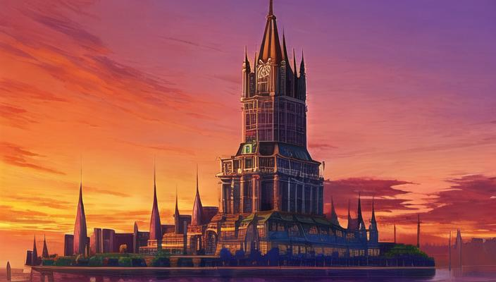
Résidence principale des personnes ayant des capacitées magiques.
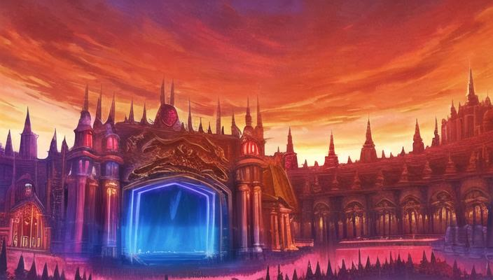
Portail de liaisons.
Mages noires (4)
Les Mages Noires sont les seules à Haremcia ayant le privilège de pratiquer la magie noire.
Elles résident à l'écart de la capitale, conscientes des dangers que représente la magie noire.
Cependant, elles restent toujours disponibles pour répondre aux besoins du couple impérial.
Leur expertise en magie noire est à la fois respectée et redoutée, conférant une aura de mystère à leur présence dans le royaume.
 Une grande sources de magie surpuissante mais très inconnue
Une grande sources de magie surpuissante mais très inconnue
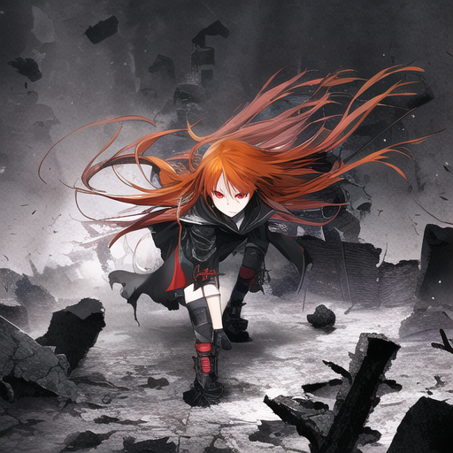
Une grande sources de magie surpuissante mais très inconnue
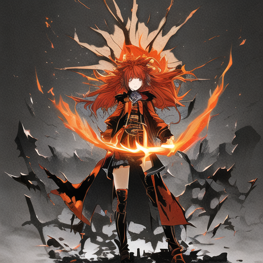
Une grande sources de magie surpuissante mais très inconnue
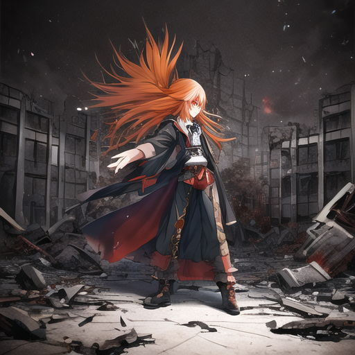
Une grande sources de magie surpuissante mais très inconnue
Démones (7)
Elles font partie des démones qui ont décidé de conclure un pacte avec Haremcia.
Originaires des enfers, elles ont leur propre culture et idéologie, raison pour laquelle elles vivent en reclus de la capitale.
Chacune d'entre elles possède des attributs démoniaques, certains plus prononcés que d'autres, ce qui les distingue des habitants ordinaires de Haremcia.
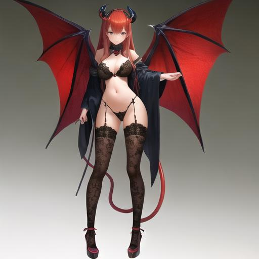
Ayant fait un pacte pour défendre Haremcia des autres démons plus dangereux (Quelques sacrifises font beaucoup de choses...)
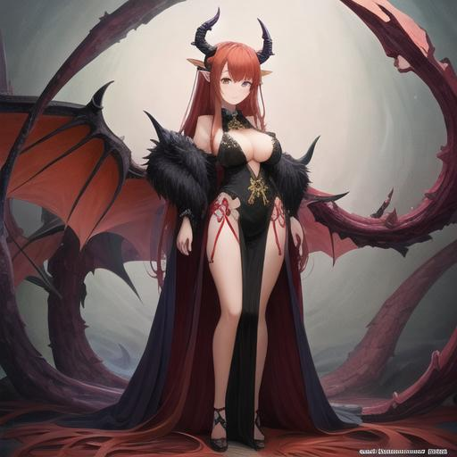
Ayant fait un pacte pour défendre Haremcia des autres démons plus dangereux (Quelques sacrifises font beaucoup de choses...)
 Ayant fait un pacte pour défendre Haremcia des autres démons plus dangereux (Quelques sacrifises font beaucoup de choses...)
Ayant fait un pacte pour défendre Haremcia des autres démons plus dangereux (Quelques sacrifises font beaucoup de choses...)
 Ayant fait un pacte pour défendre Haremcia des autres démons plus dangereux (Quelques sacrifises font beaucoup de choses...)
Ayant fait un pacte pour défendre Haremcia des autres démons plus dangereux (Quelques sacrifises font beaucoup de choses...)
 Ayant fait un pacte pour défendre Haremcia des autres démons plus dangereux (Quelques sacrifises font beaucoup de choses...)
Ayant fait un pacte pour défendre Haremcia des autres démons plus dangereux (Quelques sacrifises font beaucoup de choses...)
 Ayant fait un pacte pour défendre Haremcia des autres démons plus dangereux (Quelques sacrifises font beaucoup de choses...)
Ayant fait un pacte pour défendre Haremcia des autres démons plus dangereux (Quelques sacrifises font beaucoup de choses...)
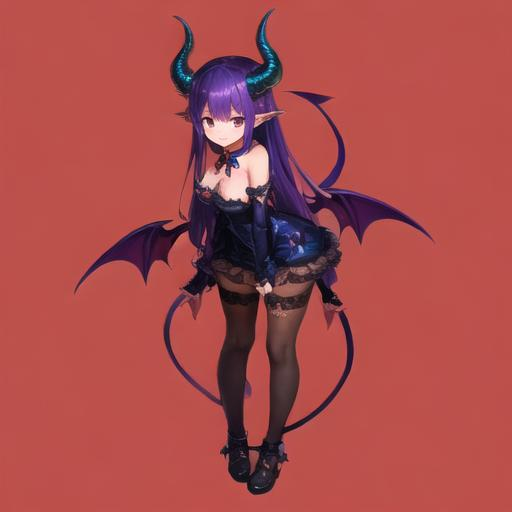
Ayant fait un pacte pour défendre Haremcia des autres démons plus dangereux (Quelques sacrifises font beaucoup de choses...)
Azazel (4)
Les Azazel, une faction de démones guerrières, ont conclu un pacte avec Haremcia.
Provenant d'un royaume infernal, les Azazel résident à proximité du couple impérial, servant ainsi de point d'appui face aux démons problématiques.
Arborant fièrement les marques distinctives de leur lignée démoniaque, chaque Azazel incarne des attributs démoniaques bien plus prononcés que les démones ordinaires.
Elles sont constamment vêtues d'armures et manient des armes démoniaques, souvent enveloppées de flammes qui ne les affectent aucunement.
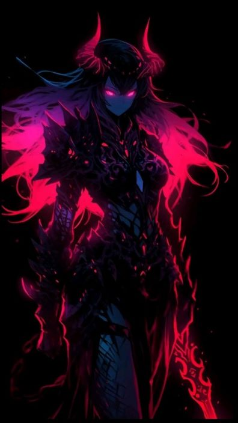
Azura
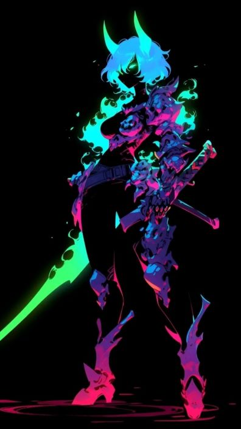
Kaida
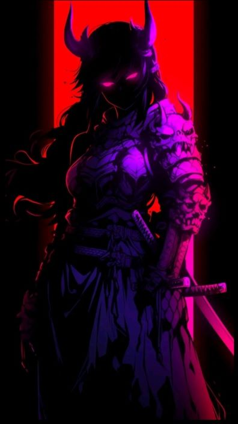
Nephthys
 Vexia
Vexia
Succubes (7)
Elles font partie des succubes ayant conclu un pacte avec Haremcia.
Originaires des enfers, elles ont développé leur propre société et idéologie. Pour éviter tout conflit avec le peuple, elles mènent une existence recluse dans le manoir impérial.
Chacune d'entre elles est pourvue de charmes démoniaques quasi irrésistibles, qu'elles utilisent avec habileté pour satisfaire leurs désirs.
Leur présence énigmatique et leur pouvoir de séduction les distinguent fortement.
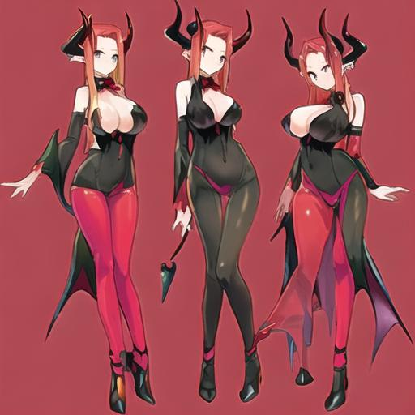
Irinvyn (oui, les 3 ont le même nom)
 Zarinlith
Zarinlith
 Ginorvyn
Ginorvyn
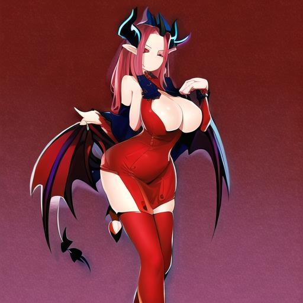
Rhelielle
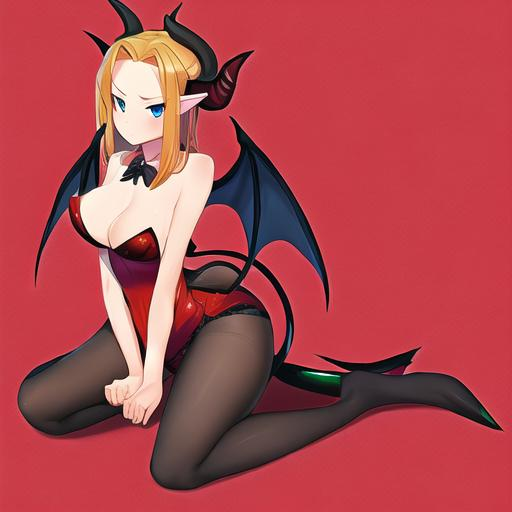
Carilieth
Gardiennes des Enfers (2)
Les Gardiennes des Enfers sont celles qui veillent à la frontière entre le monde des mortels et les enfers.
Dépourvues de toute pitié et empathie, elles suivent leur destinée sans faillir.
Elles comptent parmi les démones les plus puissantes, dotées de capacités physiques et magiques considérables.
Leur présence imposante et leur détermination inébranlable en font des gardiennes redoutées et craintes.
 Elles prennent leur rôle très au sérieux
Elles prennent leur rôle très au sérieux